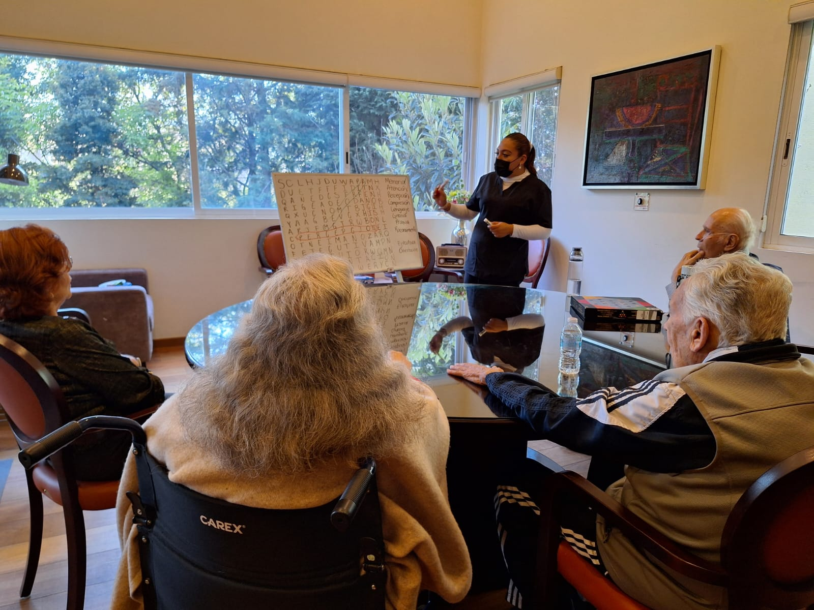
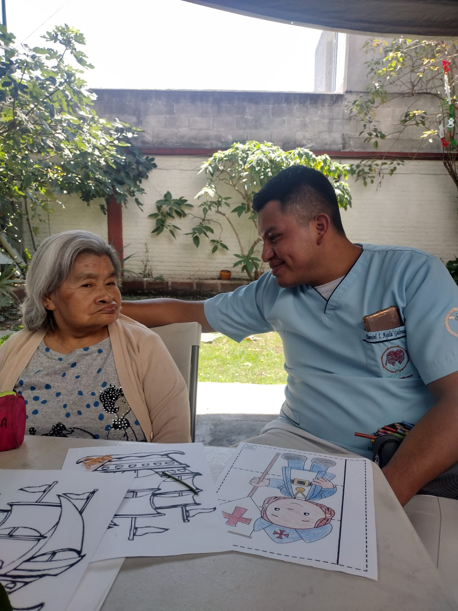

Veranos Internacionales de Investigación Gerontológica – UNEVE
Desde 2018, la Universidad Estatal del Valle de Ecatepec (UNEVE), a través del Cuerpo Académico “Ciencias del Envejecimiento y Desarrollo Sostenible”, organiza los Veranos Internacionales de Investigación Gerontológica, un espacio académico que promueve el análisis, intercambio y difusión de investigaciones en el campo del envejecimiento.
Cada edición ha abordado temas relevantes para el desarrollo científico de la gerontología, adaptándose a contextos sociales, sanitarios y educativos. A lo largo de siete años, los veranos han transitado por temas como:
- II Verano (2019): Trayectos de la investigación en gerontología: encuentros y desencuentros
- III Verano (2020): Debates metodológicos, herramientas y aplicación del conocimiento
- IV Verano (2021): Investigación gerontológica en condiciones emergentes
- V Verano (2022): Contextos de investigación: de la formación a la praxis
- VI Verano (2023): Salud y bienestar en la vejez: investigación en diferentes contextos
- VII Verano (2024): Deconstruir teoría y praxis para construir en la complejidad

Octavo Verano 2025: “Gerontología Aplicada: su soporte en la praxis y la investigación”
Se celebrará del 23 al 27 de junio y reunirá a investigadores de Argentina, Brasil, Colombia, España, México y Venezuela. El objetivo es compartir proyectos, avances y experiencias que fortalezcan la aplicación práctica de la gerontología desde una perspectiva multidisciplinaria.
